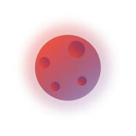
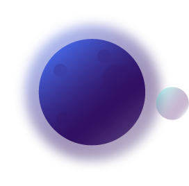

When I was a little kid whenever somebody asked me: "What do you want to be when you grow up?", with a glare in eyes, my answer would be: "I want to be an astronaut, to explore the unexplored, to see the unseen discover new shapes and creatures". Growing up reality hit me and quickly I realized that's not a possibility with the technology we have. However, I never gave up hope and soon I discovered my ability to draw and that you don't need to travel vast distances to visit strange worlds when you can create your own. Using creativity and imagination, complemented with the abilities I've learned through the years I can create my own world or bring to life worlds of others, and you can see the glare in the eyes again doing this.
It all started with drawing. Cartoon characters were first, I loved redrawing characters from TV or games and creating my own, then graffiti came I improved my work and style, then a realization came that I want to create for the rest of my life, and I needed to make a living out of this. In my mind, only viable way to do it was design, so I started learning that. Throughout the process of learning, I was introduced to compositions and color theory, throughout that photography became a passion of mine, with that came videography and brought all the magic of it. However, my dream of creating and visiting strange world was supercharged when I got into motion graphics and animation, worlds came to life. Most recently I learned coding and development, so now my worlds had a function.
Be my guest, wisit and explore my worlds through this website.
Creativity and curiosity led me to practice and evolve my skills in traditional sketching, drawing and painting. Eventually, I transferred to digital as I started doing design. As my knowledge and understanding of composition, fonts and color theory grew I developed skills in photo and raster manipulation, vector drawing, image and color correction, video editing, audio engineering, motion design, animation, etc. I chose to focus my learning to industry's golden standard ADOBE CREATIVE SUITE with its various programs for applied use of those skills.
Also learning to use a couple of programs outside of that standard like CorelDraw, Animate Studio, Sony
Vegas Pro...
As an extension of my creativity, I learned how to code, mainly focusing on web development area of
programming...
Work usually speaks for itself so please be my guest and explore one of portfolios galleries in the sidebar.
If you are interested in my full education and work experience you can download my full CV at the link below.